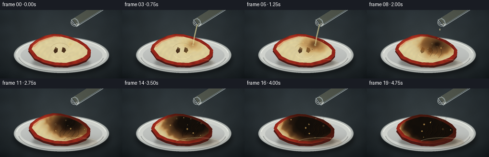
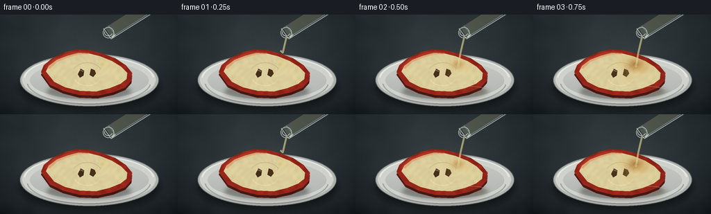

CODING AGENTS AS PIXEL WORLD MODELS
traex/GPT-5.6-Sol · phygen_152
点击播放 · 原生 RGB 像素
逐轮保存的候选
回放视频、检查图与代码变化。
每份候选均可单独播放。实际图片检查记录在下方工具轨迹中。
候选 01播放与检查图
点击播放 · 原生 RGB 像素


展开代码变化
--- 上一保存版本
+++ 本次保存版本
@@ -0,0 +1,265 @@
+from pathlib import Path
+import json, math
+import numpy as np
+from PIL import Image, ImageDraw, ImageFilter
+import artifact_io
+
+ROOT = Path(__file__).resolve().parent
+spec = json.loads((ROOT / 'task_spec.json').read_text())
+W, H, N = spec['width'], spec['height'], spec['frames']
+S = 3
+w, h = W*S, H*S
+rng = np.random.default_rng(152)
+
+# Stable fine and broad textures: the scene does not shimmer between timelapse frames.
+fine = rng.normal(0, 1, (h, w)).astype(np.float32)
+small = Image.fromarray(rng.integers(0, 256, (18, 32), dtype=np.uint8)).resize((w,h), Image.Resampling.BICUBIC).filter(ImageFilter.GaussianBlur(7*S))
+broad = (np.asarray(small).astype(np.float32)-127.5)/127.5
+small2 = Image.fromarray(rng.integers(0, 256, (36, 64), dtype=np.uint8)).resize((w,h), Image.Resampling.BICUBIC).filter(ImageFilter.GaussianBlur(2*S))
+organic = (np.asarray(small2).astype(np.float32)-127.5)/127.5
+Y, X = np.mgrid[0:h,0:w]
+
+def mask_img(): return Image.new('L',(w,h),0)
+def poly_mask(points, blur=0):
+ m=mask_img(); ImageDraw.Draw(m).polygon([(int(x*S),int(y*S)) for x,y in points], fill=255)
+ return m.filter(ImageFilter.GaussianBlur(blur*S)) if blur else m
+
+def ellipse_mask(box, blur=0):
+ m=mask_img(); ImageDraw.Draw(m).ellipse(tuple(int(v*S) for v in box), fill=255)
+ return m.filter(ImageFilter.GaussianBlur(blur*S)) if blur else m
+
+def blend(a, color, alpha):
+ """Blend color/array onto RGB float array with scalar 2-D alpha."""
+ al=np.clip(alpha,0,1)[...,None]
+ col=np.asarray(color,dtype=np.float32)
+ return a*(1-al)+col*al
+
+def draw_layer(base, layer):
+ rgba=np.asarray(layer).astype(np.float32)
+ return base*(1-rgba[...,3:4]/255)+rgba[...,:3]*(rgba[...,3:4]/255)
+
+def curve(draw, pts, fill, width):
+ # Smooth enough at 3x using piecewise line with joint='curve'.
+ draw.line([(int(x*S),int(y*S)) for x,y in pts], fill=fill, width=max(1,int(width*S)), joint='curve')
+
+# Background and ceramic dish are rendered once.
+yy=Y/h; xx=X/w
+base=np.zeros((h,w,3),np.float32)
+base[...,0]=26+15*(1-yy)+4*broad
+base[...,1]=31+17*(1-yy)+5*broad
+base[...,2]=34+18*(1-yy)+6*broad
+# benchtop soft pool of light and vignette
+light=np.exp(-(((xx-.49)/.62)**2+((yy-.55)/.72)**2)*2.0)
+base += light[...,None]*np.array([19,21,20],np.float32)
+vign=np.clip(((xx-.5)/.72)**2+((yy-.5)/.86)**2,0,1)
+base -= vign[...,None]*14
+base += fine[...,None]*1.25
+# horizontal bench reflection behind plate
+refl=np.exp(-((Y/S-116)/22)**2)*np.exp(-((X/S-130)/115)**2)
+base += refl[...,None]*np.array([5,6,6])
+
+# Plate cast shadow
+shadow=np.asarray(ellipse_mask((27,71,230,139),5),np.float32)/255
+base=blend(base,(5,7,8),shadow*.60)
+# Plate outer porcelain ellipse
+pm=np.asarray(ellipse_mask((29,57,228,132),.5),np.float32)/255
+plate_col=np.zeros_like(base); plate_col[:]=[178,183,179]
+plate_col += (8*broad+2*fine)[...,None]
+base=blend(base,plate_col,pm*.98)
+# bright raised rim
+rim_outer=np.asarray(ellipse_mask((32,60,224,128),0),np.float32)/255
+rim_inner=np.asarray(ellipse_mask((43,68,214,122),0),np.float32)/255
+rim=np.clip(rim_outer-rim_inner,0,1)
+base=blend(base,(220,222,216),rim*.72)
+# plate well gentle gradient
+well=rim_inner
+plategrad=163 + 22*(1-(Y/S-94)/45)
+wellcol=np.stack([plategrad+4,plategrad+7,plategrad+4],axis=-1)
+wellcol += (5*broad)[...,None]
+base=blend(base,wellcol,well*.90)
+# rear rim glint and front inner shadow
+layer=Image.new('RGBA',(w,h),(0,0,0,0)); d=ImageDraw.Draw(layer)
+d.arc((34*S,59*S,222*S,127*S),184,355,fill=(244,246,238,165),width=2*S)
+d.arc((38*S,63*S,218*S,130*S),8,174,fill=(88,92,91,95),width=2*S)
+base=draw_layer(base,layer)
+
+outer0=[(59,83),(63,73),(75,63),(94,54),(111,50),(128,51),(147,56),(166,63),(181,73),(190,84),(189,95),(180,105),(163,112),(140,117),(114,116),(91,110),(72,101)]
+inner0=[(66,82),(70,74),(82,65),(98,59),(113,55),(128,56),(144,60),(161,67),(174,75),(183,84),(182,93),(173,100),(158,106),(138,111),(115,110),(94,105),(78,97)]
+center=np.array([126.,84.])
+
+def transform_pts(pts, sx, sy, dy=0):
+ p=np.array(pts,float); p=(p-center)*np.array([sx,sy])+center+np.array([0,dy]); return [tuple(z) for z in p]
+
+def gaussian_blob(cx,cy,sx,sy):
+ return np.exp(-.5*(((X/S-cx)/sx)**2+((Y/S-cy)/sy)**2))
+
+frames=[]
+for fi in range(N):
+ im=base.copy()
+ # Reaction begins once the falling stream reaches the fruit.
+ q=max(0.0,(fi-1)/(N-2))
+ ease=q*q*(3-2*q)
+ late=max(0,(q-.28)/.72)
+ sx=1-.040*late; sy=1-.085*late
+ dy=1.6*late
+ outer_pts=transform_pts(outer0,sx,sy,dy)
+ inner_pts=transform_pts(inner0,sx,sy,dy)
+ # Apple's visible thickness / red lower peel.
+ side_pts=[(x,y+4.0+2*late) for x,y in outer_pts]
+ om=np.asarray(poly_mask(outer_pts,.15),np.float32)/255
+ sm=np.asarray(poly_mask(side_pts,.25),np.float32)/255
+ side=np.clip(sm-om*.75,0,1)
+ im=blend(im, np.stack([74+12*organic,19+5*organic,15+3*organic],-1), side*.98)
+ # soft apple contact shadow
+ amshadow=np.asarray(ellipse_mask((67,98+dy,189,124+dy),3),np.float32)/255
+ im=blend(im,(22,18,14),amshadow*.32*(1-sm*.75))
+ # red peel top
+ skin_col=np.stack([150+24*organic+4*fine,38+10*organic,26+5*organic],-1)
+ im=blend(im,skin_col,om)
+ inm=np.asarray(poly_mask(inner_pts,.12),np.float32)/255
+ # Fresh ivory flesh with subtle radial fibers.
+ cx,cy=126,84+dy
+ theta=np.arctan2(Y/S-cy,X/S-cx)
+ fibers=2.5*np.sin(theta*18 + np.hypot(X/S-cx,Y/S-cy)*.55)
+ flesh=np.stack([218+9*organic+fibers,204+10*organic+fibers*.6,153+8*organic],-1)
+ im=blend(im,flesh,inm)
+ # Peel highlight along upper-left lip.
+ peel_hi=np.asarray(poly_mask(transform_pts([(65,77),(76,65),(97,56),(115,52),(128,54),(128,57),(113,57),(98,62),(82,68),(72,78)],sx,sy,dy),.45),np.float32)/255
+ im=blend(im,(221,88,51),peel_hi*.34*om)
+ # Apple core, cavities and seeds (fade under chemical damage later via reaction overlay).
+ core=gaussian_blob(126,84+dy,23*sx,14*sy)*inm
+ im=blend(im,(231,218,177),core*.32)
+ detail=Image.new('RGBA',(w,h),(0,0,0,0)); dd=ImageDraw.Draw(detail)
+ # fine core arcs
+ dd.arc((104*S,int((69+dy)*S),147*S,int((101+dy)*S)),205,336,fill=(159,133,84,75),width=S)
+ dd.arc((105*S,int((70+dy)*S),146*S,int((103+dy)*S)),25,154,fill=(255,239,192,90),width=S)
+ # two almond-shaped dark seeds
+ seed_alpha=int(235*(1-.65*ease))
+ dd.polygon([(116*S,int((78+dy)*S)),(121*S,int((81+dy)*S)),(120*S,int((88+dy)*S)),(115*S,int((91+dy)*S)),(112*S,int((86+dy)*S))],fill=(55,31,14,seed_alpha))
+ dd.polygon([(131*S,int((78+dy)*S)),(136*S,int((80+dy)*S)),(138*S,int((85+dy)*S)),(134*S,int((90+dy)*S)),(129*S,int((87+dy)*S))],fill=(60,34,15,seed_alpha))
+ dd.line([(115*S,int((80+dy)*S)),(120*S,int((82+dy)*S))],fill=(172,118,57,150),width=S)
+ im=draw_layer(im,detail)
+
+ # Acid wetting and dehydration map: an irregular expanding front from impact at upper right.
+ # A secondary downhill lobe makes the corrosive liquid visibly flow over the slice.
+ px,py=147,72+dy
+ dx=(X/S-px)/66; dyf=(Y/S-py)/42
+ dist=np.sqrt(dx*dx+dyf*dyf)
+ flowdist=np.sqrt(((X/S-139)/57)**2+((Y/S-(88+dy))/33)**2)
+ front=.055 + 1.13*(q**.67)
+ irregular=.085*organic + .025*np.sin((X/S)*.23+(Y/S)*.17)
+ react=1/(1+np.exp((dist-front-irregular)/.055))
+ react2=1/(1+np.exp((flowdist-(front-.20)-irregular)/.065))
+ react=np.maximum(react,react2*.72)*inm
+ # true severity grows after wetting; edges become amber before turning carbon-black.
+ local_age=np.clip((front-dist+irregular)/.75,0,1)
+ severity=np.clip((q*.68 + local_age*.68),0,1)*react
+ # First a glossy pale-yellow wet stain.
+ wet=np.clip(react*(1-severity*.72),0,1)
+ im=blend(im,(236,210,109),wet*.28)
+ # Golden oxidation -> mahogany -> almost black carbonized tissue.
+ amber=np.clip(severity*2.2,0,1)
+ im=blend(im,np.stack([157+16*organic,88+10*organic,31+5*organic],-1),amber*.72)
+ dark=np.clip((severity-.31)/.52,0,1)
+ charcol=np.stack([40+18*organic+3*fine,23+8*organic,13+4*organic],-1)
+ im=blend(im,charcol,dark*.93)
+ carbon=np.clip((severity-.76)/.22,0,1)
+ im=blend(im,(13,11,8),carbon*.82)
+ # Darkens the red rind where acid reaches it near the impact point.
+ skin_react=1/(1+np.exp((dist-front*.88-irregular)/.06))*om*(1-inm)
+ im=blend(im,(52,19,11),skin_react*np.clip(q*1.25,0,1)*.83)
+
+ # Wrinkle fissures and collapsed tissue in the charred area.
+ wrinkles=Image.new('RGBA',(w,h),(0,0,0,0)); wd=ImageDraw.Draw(wrinkles)
+ if fi>=6:
+ amount=(fi-5)/(N-5)
+ curves=[[(151,73),(146,79),(148,88),(141,96)],[(161,75),(155,81),(157,91),(150,101)],
+ [(139,73),(136,80),(138,88),(132,98)],[(171,82),(163,86),(165,95),(157,104)],
+ [(128,79),(130,85),(125,92),(126,101)],[(150,105),(145,101),(139,104),(134,108)]]
+ for j,pts in enumerate(curves):
+ if amount > j*.075:
+ pts=[(x,(y-84)*sy+84+dy) for x,y in pts]
+ curve(wd,pts,(8,6,4,int(70+110*amount)),.65+amount*.25)
+ curve(wd,[(x-0.8,y-0.8) for x,y in pts],(119,67,25,int(35+35*amount)),.32)
+ im=draw_layer(im,wrinkles)
+
+ # Acid pool collects on plate below the slice; concentrated acid is clear and syrupy.
+ if fi>=2:
+ poolgrow=np.clip((fi-2)/8,0,1)
+ pb=(123-12*poolgrow,103,194+10*poolgrow,119+4*poolgrow)
+ pool=np.asarray(ellipse_mask(pb,1.4),np.float32)/255
+ pool*= (1-sm*.76)
+ im=blend(im,(112,84,45),pool*(.11+.13*q))
+ # black-brown runoff near apple edge
+ runoff=gaussian_blob(163,108+dy,25+8*poolgrow,5+2*poolgrow)*(1-sm*.70)
+ im=blend(im,(57,34,17),runoff*.24*q)
+ gl=Image.new('RGBA',(w,h),(0,0,0,0)); gd=ImageDraw.Draw(gl)
+ gd.arc(tuple(int(v*S) for v in pb),195,337,fill=(242,233,185,int(65+35*q)),width=S)
+ im=draw_layer(im,gl)
+
+ # Bubbles at the active reaction front; their changing positions communicate timelapse.
+ bub=Image.new('RGBA',(w,h),(0,0,0,0)); bd=ImageDraw.Draw(bub)
+ if fi>=3:
+ count=min(15,2+(fi-3))
+ for j in range(count):
+ ang=(j*2.399 + fi*.19)
+ rad=(.18+.72*((j*37)%13)/13)*front
+ bx=px+66*rad*math.cos(ang)
+ by=py+42*rad*math.sin(ang)
+ if not (71<bx<181 and 59<by<111): continue
+ rr=(.65+((j*11)%7)/8)*(1+.18*q)
+ col=(211,161,78,int(115+65*q)) if j%3 else (45,27,12,int(150+55*q))
+ bd.ellipse((int((bx-rr)*S),int((by-rr)*S),int((bx+rr)*S),int((by+rr)*S)),fill=col,outline=(241,203,126,130),width=max(1,S//2))
+ if rr>1: bd.ellipse((int((bx-rr*.45)*S),int((by-rr*.55)*S),int((bx-rr*.05)*S),int((by-rr*.15)*S)),fill=(255,237,188,120))
+ im=draw_layer(im,bub)
+
+ # Wisps of water vapor (dehydration is exothermic), drifting between timelapse captures.
+ vapor=Image.new('RGBA',(w,h),(0,0,0,0)); vd=ImageDraw.Draw(vapor)
+ if fi>=8:
+ strength=min(1,(fi-7)/7)
+ for j in range(4):
+ phase=fi*.65+j*1.7
+ x0=137+j*10 + 2.5*math.sin(phase)
+ y0=78-j*2
+ pts=[]
+ for k in range(16):
+ yyv=y0-k*2.65
+ xxv=x0+3.2*math.sin(k*.48+phase)+k*.18
+ pts.append((xxv,yyv))
+ curve(vd,pts,(218,221,211,int((34+17*j)*strength)),.7+0.18*j)
+ vapor=vapor.filter(ImageFilter.GaussianBlur(1.05*S))
+ im=draw_layer(im,vapor)
+
+ # Pouring vessel neck, held just outside the crop. Drawn last as foreground glass.
+ glass=Image.new('RGBA',(w,h),(0,0,0,0)); gd=ImageDraw.Draw(glass)
+ # translucent acid inside angled glass neck
+ gd.polygon([(151*S,19*S),(161*S,33*S),(226*S,-8*S),(216*S,-22*S)],fill=(221,216,154,50))
+ gd.line([(149*S,20*S),(160*S,35*S),(230*S,-9*S)],fill=(225,235,233,170),width=S)
+ gd.line([(156*S,16*S),(166*S,29*S),(231*S,-12*S)],fill=(169,189,190,135),width=S)
+ gd.line([(161*S,33*S),(166*S,29*S)],fill=(247,250,241,190),width=2*S)
+ gd.ellipse((148*S,18*S,164*S,34*S),outline=(229,239,235,180),width=S)
+ gd.arc((150*S,20*S,162*S,31*S),20,190,fill=(255,255,247,190),width=S)
+ # viscous stream: starts, contacts fruit, then tapers to drops.
+ if 1 <= fi <= 7:
+ if fi==1: yend=52
+ elif fi==2: yend=72
+ else: yend=74
+ width=2.7 if fi<6 else (1.9 if fi==6 else 1.1)
+ pts=[(157,30),(154,42),(151,55),(148,yend)]
+ curve(gd,pts,(222,213,146,155),width)
+ curve(gd,[(x-.65,y) for x,y in pts],(255,251,218,170),.55)
+ if fi>=2:
+ gd.ellipse((int((146.1)*S),int((70.5)*S),int((149.8)*S),int((75.7)*S)),fill=(225,215,150,120))
+ elif fi in (8,9):
+ dropy=39+(fi-8)*17
+ gd.ellipse((152*S,dropy*S,154*S,(dropy+4)*S),fill=(240,230,176,155))
+ im=draw_layer(im,glass)
+
+ # Cinematic final grade, clamp and downsample with antialiasing.
+ im=np.clip(im,0,255).astype(np.uint8)
+ out=Image.fromarray(im,'RGB').resize((W,H),Image.Resampling.LANCZOS)
+ frames.append(np.asarray(out,dtype=np.uint8))
+
+frames=np.stack(frames,axis=0)
+artifact_io.save(frames, ROOT)
+print('saved',frames.shape,frames.dtype)
可观测工具轨迹
实际执行的命令与返回图片。
命令 1exit 0
/bin/bash -lc "ls -la && printf '\\n--- prompt.txt ---\\n' && cat prompt.txt && printf '\\n--- GENERATION_RULES.md ---\\n' && cat GENERATION_RULES.md && printf '\\n--- task_spec.json ---\\n' && cat task_spec.json"
命令 2exit 0
/bin/bash -lc "find . -maxdepth 2 -type f -printf '%p %s bytes\\n' | sort"
命令 3exit 0
/bin/bash -lc "sed -n '1,240p' artifact_io.py && python - <<'PY' import importlib.util for m in ['numpy','PIL','cv2','imageio','scipy']: print(m, bool(importlib.util.find_spec(m))) PY"
命令 4exit 0
/bin/bash -lc "cat > generate.py <<'PY'
from pathlib import Path
import json, math
import numpy as np
from PIL import Image, ImageDraw, ImageFilter
import artifact_io
ROOT = Path(__file__).resolve().parent
spec = json.loads((ROOT / 'task_spec.json').read_text())
W, H, N = spec['width'], spec['height'], spec['frames']
S = 3
w, h = W*S, H*S
rng = np.random.default_rng(152)
# Stable fine and broad textures: the scene does not shimmer between timelapse frames.
fine = rng.normal(0, 1, (h, w)).astype(np.float32)
small = Image.fromarray(rng.integers(0, 256, (18, 32), dtype=np.uint8)).resize((w,h), Image.Resampling.BICUBIC).filter(ImageFilter.GaussianBlur(7*S))
broad = (np.asarray(small).astype(np.float32)-127.5)/127.5
small2 = Image.fromarray(rng.integers(0, 256, (36, 64), dtype=np.uint8)).resize((w,h), Image.Resampling.BICUBIC).filter(ImageFilter.GaussianBlur(2*S))
organic = (np.asarray(small2).astype(np.float32)-127.5)/127.5
Y, X = np.mgrid[0:h,0:w]
def mask_img(): return Image.new('L',(w,h),0)
def poly_mask(points, blur=0):
m=mask_img(); ImageDraw.Draw(m).polygon([(int(x*S),int(y*S)) for x,y in points], fill=255)
return m.filter(ImageFilter.GaussianBlur(blur*S)) if blur else m
def ellipse_mask(box, blur=0):
m=mask_img(); ImageDraw.Draw(m).ellipse(tuple(int(v*S) for v in box), fill=255)
return m.filter(ImageFilter.GaussianBlur(blur*S)) if blur else m
def blend(a, color, alpha):
\"\"\"Blend color/array onto RGB float array with scalar 2-D alpha.\"\"\"
al=np.clip(alpha,0,1)[...,None]
col=np.asarray(color,dtype=np.float32)
return a*(1-al)+col*al
def draw_layer(base, layer):
rgba=np.asarray(layer).astype(np.float32)
return base*(1-rgba[...,3:4]/255)+rgba[...,:3]*(rgba[...,3:4]/255)
def curve(draw, pts, fill, width):
# Smooth enough at 3x using piecewise line with joint='curve'.
draw.line([(int(x*S),int(y*S)) for x,y in pts], fill=fill, width=max(1,int(width*S)), joint='curve')
# Background and ceramic dish are rendered once.
yy=Y/h; xx=X/w
base=np.zeros((h,w,3),np.float32)
base[...,0]=26+15*(1-yy)+4*broad
base[...,1]=31+17*(1-yy)+5*broad
base[...,2]=34+18*(1-yy)+6*broad
# benchtop soft pool of light and vignette
light=np.exp(-(((xx-.49)/.62)**2+((yy-.55)/.72)**2)*2.0)
base += light[...,None]*np.array([19,21,20],np.float32)
vign=np.clip(((xx-.5)/.72)**2+((yy-.5)/.86)**2,0,1)
base -= vign[...,None]*14
base += fine[...,None]*1.25
# horizontal bench reflection behind plate
refl=np.exp(-((Y/S-116)/22)**2)*np.exp(-((X/S-130)/115)**2)
base += refl[...,None]*np.array([5,6,6])
# Plate cast shadow
shadow=np.asarray(ellipse_mask((27,71,230,139),5),np.float32)/255
base=blend(base,(5,7,8),shadow*.60)
# Plate outer porcelain ellipse
pm=np.asarray(ellipse_mask((29,57,228,132),.5),np.float32)/255
plate_col=np.zeros_like(base); plate_col[:]=[178,183,179]
plate_col += (8*broad+2*fine)[...,None]
base=blend(base,plate_col,pm*.98)
# bright raised rim
rim_outer=np.asarray(ellipse_mask((32,60,224,128),0),np.float32)/255
rim_inner=np.asarray(ellipse_mask((43,68,214,122),0),np.float32)/255
rim=np.clip(rim_outer-rim_inner,0,1)
base=blend(base,(220,222,216),rim*.72)
# plate well gentle gradient
well=rim_inner
plategrad=163 + 22*(1-(Y/S-94)/45)
wellcol=np.stack([plategrad+4,plategrad+7,plategrad+4],axis=-1)
wellcol += (5*broad)[...,None]
base=blend(base,wellcol,well*.90)
# rear rim glint and front inner shadow
layer=Image.new('RGBA',(w,h),(0,0,0,0)); d=ImageDraw.Draw(layer)
d.arc((34*S,59*S,222*S,127*S),184,355,fill=(244,246,238,165),width=2*S)
d.arc((38*S,63*S,218*S,130*S),8,174,fill=(88,92,91,95),width=2*S)
base=draw_layer(base,layer)
outer0=[(59,83),(63,73),(75,63),(94,54),(111,50),(128,51),(147,56),(166,63),(181,73),(190,84),(189,95),(180,105),(163,112),(140,117),(114,116),(91,110),(72,101)]
inner0=[(66,82),(70,74),(82,65),(98,59),(113,55),(128,56),(144,60),(161,67),(174,75),(183,84),(182,93),(173,100),(158,106),(138,111),(115,110),(94,105),(78,97)]
center=np.array([126.,84.])
def transform_pts(pts, sx, sy, dy=0):
p=np.array(pts,float); p=(p-center)*np.array([sx,sy])+center+np.array([0,dy]); return [tuple(z) for z in p]
def gaussian_blob(cx,cy,sx,sy):
return np.exp(-.5*(((X/S-cx)/sx)**2+((Y/S-cy)/sy)**2))
frames=[]
for fi in range(N):
im=base.copy()
# Reaction begins once the falling stream reaches the fruit.
q=max(0.0,(fi-1)/(N-2))
ease=q*q*(3-2*q)
late=max(0,(q-.28)/.72)
sx=1-.040*late; sy=1-.085*late
dy=1.6*late
outer_pts=transform_pts(outer0,sx,sy,dy)
inner_pts=transform_pts(inner0,sx,sy,dy)
# Apple's visible thickness / red lower peel.
side_pts=[(x,y+4.0+2*late) for x,y in outer_pts]
om=np.asarray(poly_mask(outer_pts,.15),np.float32)/255
sm=np.asarray(poly_mask(side_pts,.25),np.float32)/255
side=np.clip(sm-om*.75,0,1)
im=blend(im, np.stack([74+12*organic,19+5*organic,15+3*organic],-1), side*.98)
# soft apple contact shadow
amshadow=np.asarray(ellipse_mask((67,98+dy,189,124+dy),3),np.float32)/255
im=blend(im,(22,18,14),amshadow*.32*(1-sm*.75))
# red peel top
skin_col=np.stack([150+24*organic+4*fine,38+10*organic,26+5*organic],-1)
im=blend(im,skin_col,om)
inm=np.asarray(poly_mask(inner_pts,.12),np.float32)/255
# Fresh ivory flesh with subtle radial fibers.
cx,cy=126,84+dy
theta=np.arctan2(Y/S-cy,X/S-cx)
fibers=2.5*np.sin(theta*18 + np.hypot(X/S-cx,Y/S-cy)*.55)
flesh=np.stack([218+9*organic+fibers,204+10*organic+fibers*.6,153+8*organic],-1)
im=blend(im,flesh,inm)
# Peel highlight along upper-left lip.
peel_hi=np.asarray(poly_mask(transform_pts([(65,77),(76,65),(97,56),(115,52),(128,54),(128,57),(113,57),(98,62),(82,68),(72,78)],sx,sy,dy),.45),np.float32)/255
im=blend(im,(221,88,51),peel_hi*.34*om)
# Apple core, cavities and seeds (fade under chemical damage later via reaction overlay).
core=gaussian_blob(126,84+dy,23*sx,14*sy)*inm
im=blend(im,(231,218,177),core*.32)
detail=Image.new('RGBA',(w,h),(0,0,0,0)); dd=ImageDraw.Draw(detail)
# fine core arcs
dd.arc((104*S,int((69+dy)*S),147*S,int((101+dy)*S)),205,336,fill=(159,133,84,75),width=S)
dd.arc((105*S,int((70+dy)*S),146*S,int((103+dy)*S)),25,154,fill=(255,239,192,90),width=S)
# two almond-shaped dark seeds
seed_alpha=int(235*(1-.65*ease))
dd.polygon([(116*S,int((78+dy)*S)),(121*S,int((81+dy)*S)),(120*S,int((88+dy)*S)),(115*S,int((91+dy)*S)),(112*S,int((86+dy)*S))],fill=(55,31,14,seed_alpha))
dd.polygon([(131*S,int((78+dy)*S)),(136*S,int((80+dy)*S)),(138*S,int((85+dy)*S)),(134*S,int((90+dy)*S)),(129*S,int((87+dy)*S))],fill=(60,34,15,seed_alpha))
dd.line([(115*S,int((80+dy)*S)),(120*S,int((82+dy)*S))],fill=(172,118,57,150),width=S)
im=draw_layer(im,detail)
# Acid wetting and dehydration map: an irregular expanding front from impact at upper right.
# A secondary downhill lobe makes the corrosive liquid visibly flow over the slice.
px,py=147,72+dy
dx=(X/S-px)/66; dyf=(Y/S-py)/42
dist=np.sqrt(dx*dx+dyf*dyf)
flowdist=np.sqrt(((X/S-139)/57)**2+((Y/S-(88+dy))/33)**2)
front=.055 + 1.13*(q**.67)
irregular=.085*organic + .025*np.sin((X/S)*.23+(Y/S)*.17)
react=1/(1+np.exp((dist-front-irregular)/.055))
react2=1/(1+np.exp((flowdist-(front-.20)-irregular)/.065))
react=np.maximum(react,react2*.72)*inm
# true severity grows after wetting; edges become amber before turning carbon-black.
local_age=np.clip((front-dist+irregular)/.75,0,1)
severity=np.clip((q*.68 + local_age*.68),0,1)*react
# First a glossy pale-yellow wet stain.
wet=np.clip(react*(1-severity*.72),0,1)
im=blend(im,(236,210,109),wet*.28)
# Golden oxidation -> mahogany -> almost black carbonized tissue.
amber=np.clip(severity*2.2,0,1)
im=blend(im,np.stack([157+16*organic,88+10*organic,31+5*organic],-1),amber*.72)
dark=np.clip((severity-.31)/.52,0,1)
charcol=np.stack([40+18*organic+3*fine,23+8*organic,13+4*organic],-1)
im=blend(im,charcol,dark*.93)
carbon=np.clip((severity-.76)/.22,0,1)
im=blend(im,(13,11,8),carbon*.82)
# Darkens the red rind where acid reaches it near the impact point.
skin_react=1/(1+np.exp((dist-front*.88-irregular)/.06))*om*(1-inm)
im=blend(im,(52,19,11),skin_react*np.clip(q*1.25,0,1)*.83)
# Wrinkle fissures and collapsed tissue in the charred area.
wrinkles=Image.new('RGBA',(w,h),(0,0,0,0)); wd=ImageDraw.Draw(wrinkles)
if fi>=6:
amount=(fi-5)/(N-5)
curves=[[(151,73),(146,79),(148,88),(141,96)],[(161,75),(155,81),(157,91),(150,101)],
[(139,73),(136,80),(138,88),(132,98)],[(171,82),(163,86),(165,95),(157,104)],
[(128,79),(130,85),(125,92),(126,101)],[(150,105),(145,101),(139,104),(134,108)]]
for j,pts in enumerate(curves):
if amount > j*.075:
pts=[(x,(y-84)*sy+84+dy) for x,y in pts]
curve(wd,pts,(8,6,4,int(70+110*amount)),.65+amount*.25)
curve(wd,[(x-0.8,y-0.8) for x,y in pts],(119,67,25,int(35+35*amount)),.32)
im=draw_layer(im,wrinkles)
# Acid pool collects on plate below the slice; concentrated acid is clear and syrupy.
if fi>=2:
poolgrow=np.clip((fi-2)/8,0,1)
pb=(123-12*poolgrow,103,194+10*poolgrow,119+4*poolgrow)
pool=np.asarray(ellipse_mask(pb,1.4),np.float32)/255
pool*= (1-sm*.76)
im=blend(im,(112,84,45),pool*(.11+.13*q))
# black-brown runoff near apple edge
runoff=gaussian_blob(163,108+dy,25+8*poolgrow,5+2*poolgrow)*(1-sm*.70)
im=blend(im,(57,34,17),runoff*.24*q)
gl=Image.new('RGBA',(w,h),(0,0,0,0)); gd=ImageDraw.Draw(gl)
gd.arc(tuple(int(v*S) for v in pb),195,337,fill=(242,233,185,int(65+35*q)),width=S)
im=draw_layer(im,gl)
# Bubbles at the active reaction front; their changing positions communicate timelapse.
bub=Image.new('RGBA',(w,h),(0,0,0,0)); bd=ImageDraw.Draw(bub)
if fi>=3:
count=min(15,2+(fi-3))
for j in range(count):
ang=(j*2.399 + fi*.19)
rad=(.18+.72*((j*37)%13)/13)*front
bx=px+66*rad*math.cos(ang)
by=py+42*rad*math.sin(ang)
if not (71<bx<181 and 59<by<111): continue
rr=(.65+((j*11)%7)/8)*(1+.18*q)
col=(211,161,78,int(115+65*q)) if j%3 else (45,27,12,int(150+55*q))
bd.ellipse((int((bx-rr)*S),int((by-rr)*S),int((bx+rr)*S),int((by+rr)*S)),fill=col,outline=(241,203,126,130),width=max(1,S//2))
if rr>1: bd.ellipse((int((bx-rr*.45)*S),int((by-rr*.55)*S),int((bx-rr*.05)*S),int((by-rr*.15)*S)),fill=(255,237,188,120))
im=draw_layer(im,bub)
# Wisps of water vapor (dehydration is exothermic), drifting between timelapse captures.
vapor=Image.new('RGBA',(w,h),(0,0,0,0)); vd=ImageDraw.Draw(vapor)
if fi>=8:
strength=min(1,(fi-7)/7)
for j in range(4):
phase=fi*.65+j*1.7
x0=137+j*10 + 2.5*math.sin(phase)
y0=78-j*2
pts=[]
for k in range(16):
yyv=y0-k*2.65
xxv=x0+3.2*math.sin(k*.48+phase)+k*.18
pts.append((xxv,yyv))
curve(vd,pts,(218,221,211,int((34+17*j)*strength)),.7+0.18*j)
vapor=vapor.filter(ImageFilter.GaussianBlur(1.05*S))
im=draw_layer(im,vapor)
# Pouring vessel neck, held just outside the crop. Drawn last as foreground glass.
glass=Image.new('RGBA',(w,h),(0,0,0,0)); gd=ImageDraw.Draw(glass)
# translucent acid inside angled glass neck
gd.polygon([(151*S,19*S),(161*S,33*S),(226*S,-8*S),(216*S,-22*S)],fill=(221,216,154,50))
gd.line([(149*S,20*S),(160*S,35*S),(230*S,-9*S)],fill=(225,235,233,170),width=S)
gd.line([(156*S,16*S),(166*S,29*S),(231*S,-12*S)],fill=(169,189,190,135),width=S)
gd.line([(161*S,33*S),(166*S,29*S)],fill=(247,250,241,190),width=2*S)
gd.ellipse((148*S,18*S,164*S,34*S),outline=(229,239,235,180),width=S)
gd.arc((150*S,20*S,162*S,31*S),20,190,fill=(255,255,247,190),width=S)
# viscous stream: starts, contacts fruit, then tapers to drops.
if 1 <= fi <= 7:
if fi==1: yend=52
elif fi==2: yend=72
else: yend=74
width=2.7 if fi<6 else (1.9 if fi==6 else 1.1)
pts=[(157,30),(154,42),(151,55),(148,yend)]
curve(gd,pts,(222,213,146,155),width)
curve(gd,[(x-.65,y) for x,y in pts],(255,251,218,170),.55)
if fi>=2:
gd.ellipse((int((146.1)*S),int((70.5)*S),int((149.8)*S),int((75.7)*S)),fill=(225,215,150,120))
elif fi in (8,9):
dropy=39+(fi-8)*17
gd.ellipse((152*S,dropy*S,154*S,(dropy+4)*S),fill=(240,230,176,155))
im=draw_layer(im,glass)
# Cinematic final grade, clamp and downsample with antialiasing.
im=np.clip(im,0,255).astype(np.uint8)
out=Image.fromarray(im,'RGB').resize((W,H),Image.Resampling.LANCZOS)
frames.append(np.asarray(out,dtype=np.uint8))
frames=np.stack(frames,axis=0)
artifact_io.save(frames, ROOT)
print('saved',frames.shape,frames.dtype)
PY
python generate.py"命令 5exit 0
/bin/bash -lc 'python -m py_compile generate.py && grep -n "artifact_io.save" generate.py && find frames -maxdepth 1 -type f | sort | wc -l'
命令 6exit 0
/bin/bash -lc "python - <<'PY'
from pathlib import Path
import numpy as np
from PIL import Image
z=np.load('pixels.npz')['pixels']
print('pixels',z.shape,z.dtype,'size',Path('pixels.npz').stat().st_size)
fs=np.stack([np.asarray(Image.open(f'frames/{i:02d}.png')) for i in range(20)])
print('frames',fs.shape,fs.dtype,'range',fs.min(),fs.max())
print('means',np.round(fs.mean((1,2,3)),1))
print('frame deltas',np.round(np.abs(np.diff(fs.astype(float),axis=0)).mean((1,2,3)),2))
print('changed fractions',np.round((np.any(np.diff(fs.astype(int),axis=0)"'!=0,axis=3)).mean((1,2)),3))
print('"'artifacts',[(p.name,p.stat().st_size) for p in Path('.').iterdir() if p.is_file()])
PY"保存候选 1 份；完成命令 6 次；可验证图片返回 0 张。原始 API 响应与完整日志保留在本地。